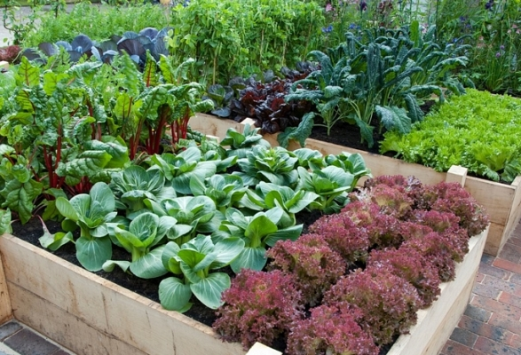
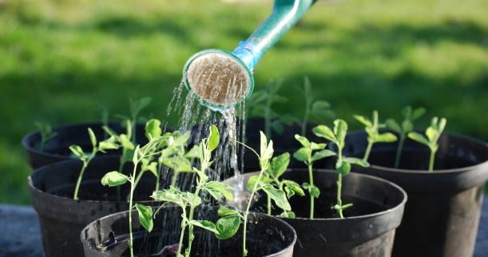
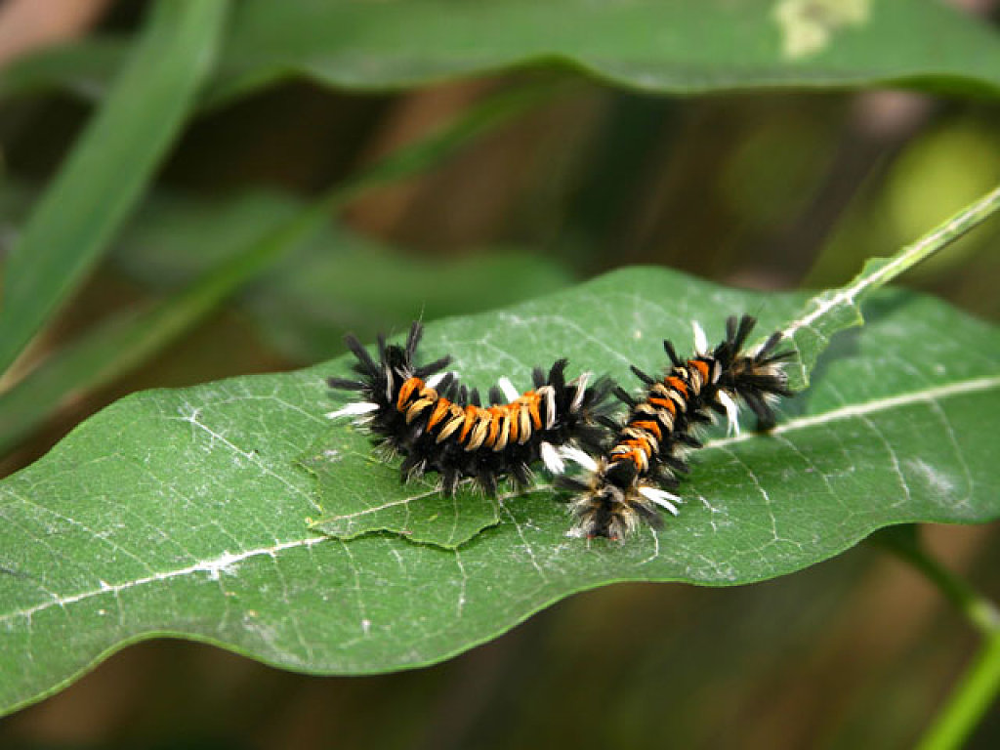
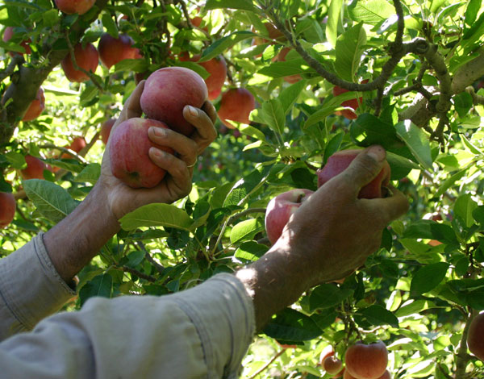

Inicia tu propio Jardin Organico
Aqui te enseñamos como.
Empezar un nuevo proyecto siempre nos resulta un tema muy complejo sin embargo no siempre es de esa forma o al menos no debemos verlo así, cuando decidimos por iniciar un proyecto tenemos un objetivo en cuenta y un resultado al que queremos llegar, por algo queremos realizar dicho proyecto.
En el caso de los jardines orgánicos debemos ver primero las ventajas que estos nos traerán, el beneficio en nuestra salud nuestro dinero y un factor muy importante la ayuda al medio ambiente que la aplicación de estos provoca.
En esta página te enseñaremos como puedes empezar tu propio jardín orgánico en unos simples pasos, pon en práctica las siguientes actividades y en tu hogar podrás comer saludable y ayudar el planeta en el proceso.
Prepara el suelo
Para obtener resultados satisfactorios en tu jardín debes estar seguro de que el suelo sea el adecuado para que tus futuros alimentos estén llenos de nutrientes, la buena salud del suelo ayuda a crear plantas fuertes y saludables, en el siguiente enlace te daremos los pasos para Preparar tu suelo para siembra.
Composta.
Prepara la mezcla
Tu composta debe tener cuatro elementos:
1.- Marrones. Es la mezcla de hojas secas, ramas, aserrín, pedazos de madera y periódico triturado.
2.- Verdes. Restos orgánicos, hierba, residuos vegetales.
3.- Tierra. Esta dará cuerpo a las mezclas anteriores.
4.- Agua. Tener la cantidad adecuada de agua, verdes y marrones es la premisa básica de la composta.
NOTA: Tu montoncito de composta debe tener la misma cantidad de marrones y verdes.
Prepara el lugar
En jardín: seleccione un lugar seco con sombra, pero con acceso a una fuente de agua y cava un hoyo. El tamaño dependerá de la cantidad de composta que vas a hacer.
Dentro de casa: selecciona un bote de basura del tamaño de la composta que piensas hacer. Haz hoyitos de menos de un centímetro en la parte inferior y a los lados del mismo. Coloca el bote dentro de otro de mayor tamaño, separado por un ladriso en la parte inferior. Esto ayudará a la ventilación. Rodea el ladrillo con una capa de madera, y ramitas. Envuelve el bote que contiene la composta para mantenerla caliente.
Empieza
Paso 1. La capa inferior debe ser de ramas y trozos de madera, esto ayudará a la ventilación.
Paso 2. Alterna las capas de desecho de jardín con los restos de comida, colocando una capa de tierra entre ellas. Mantén húmeda la mezcla y revuélvela cada dos semanas.
Paso 3. Cubre la composta con lona o tapa para mantenerla húmeda y caliente.
Durante la época de primavera y verano tu composta tardará tres meses en estar lista, en invierno el tiempo se extiende a seis meses. Para saber si está lista, toma un puño y observa su color. Deberá ser obscura y no observarás nada de lo depositado, excepto los trozos de ramas. La composta se aplica una vez al año. Agrega lombrices de tierra donde vayas a poner la composta, para que se oxigene a través de los túneles que cavan. Si no usas la composta, puedes guardarla en bolsas cerradas herméticamente.
Consejos
- Trata de controlar la exposición al sol para mantener la humedad.
- Si notas olor a amoníaco, significa que hay demasiada mezcla verde y poca marrón. Puedes agregar hojas secas.
- Si notas un olor a podrido, significa que hay demasiada humedad y poco oxígeno. Añade materia seca.
- Para evitar moscas y mosquitos de fruta entierra un poco los restos de cocina.
Escoje las plantas correctas.
Vale la pena escoger plantas que crecerán bastante en las condiciones que las tengamos como el lugar, escoge plantas que se ajusten a cada lugar en términos de luz, humedad y calidad del suelo.
Muchos jardines pueden variar dependiente las variantes. Entre más felices estén tus plantas más resistentes se convertirán a los ataques.
Es recomendable buscar plantas que no hayan crecido con fertilizantes químicos ni pesticidas. Un gran lugar para buscar estas plantas son los negocios locales de plantas ya que estos mismos venden plantas nativas de nuestra localidad estas se acomodaran bien a nuestro jardín. Muchas veces es mejor plantarlas nosotros mismos porque así se adaptaran a el ambiente desde el inicio.

Cultivo de plantas en espacios amplios.
Las plantas que cosecharas tales como vegetales o flores deben estar agrupadas en grupos estrechamente por donde no puedas caminar, agrupar las plantas de esta manera evita el crecimiento de hierbas malas y el desperdicio de agua, asi mismo permite organizar la composta y los nutrientes. Mantenimiento de fácil acceso para tu jardín ayudara a mantener el suelo saludable, un amplio espacio entre filas ayuda a fomentar la circulación del aire mismo que repele el ataque de hongos. Recuerda que tus sembradíos no se mantendrán pequeños por siempre y evitar el esparcimiento de sombra es una buena idea los pequeños sembradíos.
Si tienes un espacio y tiempo limitados y quieres tener la una buena remuneración de productor orgánicos estas plantas son para ti.
- Tomate
- Guisantes de azúcar
- Calabacín
- Frijol trepador
- Beta vulgaris var. Cicla (parecida al betabel)

Riego de nuestras plantas.
La mejor parte del día para regar tus plantas es generalmente en la mañana, porque? las mañanas tienden hacer frías y sin fuertes vientos, así que la cantidad de agua que se pierde por la evaporación se ve reducida, si riegas en la noche las plantas se mantendrán húmedas durante la noche, exponiéndolas más a ser dañadas por hongos y enfermedades por bacterias.
Lo que tú quieres es regar las raíces no las partes verdes, las cuales son dañadas más fácilmente, un sistema de goteo o empapado de las plantas trabaja muy bien o simplemente siendo cuidadoso con las bases de las plantas regándolas a mano. La mayoría de los expertos recomiendan considerar regarlas infrecuentemente en determinadas plantas, con un total de agua de una pulgada por semana (Tomando en cuenta la lluvia). Una o dos aplicaciones por semana favorecen las raíces profundas lo cual nos da plantas más fuerte.
Un consejo es tratar de regar nuestras plantas siempre con agua a temperatura ambiente para evitar peligros a nuestras plantas, recuerda que cada día es más importante estar conscientes de ahorrar agua.

Deshierbe
Las plantas malas siempre se hacen presentes en el tipo de áreas que planeamos plantar esto ocurrirá desde que tengas tus pequeñas plantas hasta que alcancen su máximo tamaño, retirar las plantas malas a mano puede sonar como un trabajo duro y realmente puede serlo pero también es un buen ejercicio y te invita a salir afuera a tomar aire fresco, no querrás poner químicos tóxicos en tus plantas con pesticidas ¿cierto? Ya que esto puede representar un peligro para ti, tus hijos o mascotas. Puedes reducir el número de plantas malas aplicando mantillo (Abono que resulta de la descomposición del estiércol) en tu tierra, mismo que ayudar a proteger la tierra.
Si se siente cansado de quitar las hierbas malas o no está en condiciones de hacerlo, puede considerar contratar algún chico del vecindario, esta es una buena manera de dar a conocer este proyecto a otras personas en su comunidad.

Plagas
Si tus plantas están comenzando a ser atacadas por plagas, este puede ser un síntoma de otros problemas, así que la primer cosa que deberías hacer es asegurarte de que estén recibiendo suficiente luz, nutrientes y humedad.
Debes recordar que un jardín diverso previene plagas, limitando la cantidad de plantas a solo un tipo e impulsando la biodiversidad al mismo tiempo. Es una buena idea pensar en tener depredadores naturales en tu jardín tales como ranas, sapos, lagartijas o aves. Insectos beneficiosos pueden llegar a ser tus mejores amigos especialmente los coccinélidos conocidos localmente como maripositas. Deja una pequeña fuente de agua para atraer a los predadores amistosos, también es una buena idea dejar crecer plantas con flores lo cual los también los atraerá.

Cosecha tus frutos
No te olvides de recoger los frutos de tu labor, producir orgánicos frescos tiene su beneficio, háblales del proyecto a tus amigos, vecinos y compañeros de trabajo, puede que ellos también se interesen de producir sus propios alimentos orgánicos. Generalmente entre más coseches tus plantas producirán más para ti.
Durante la temporada más alta de cosecho te darás cuenta que lo mejor es revisar tu jardín cada día. ¿Ya tienen frutos? Si los usaras recógelos justo antes de que los necesites, pero si los recoges y los almacenan se secaran, lo mejor es esperar justo antes de que florezcan completamente, que es cuando se encuentran en su punto máximo de sabor. Recoge todos tus frutos en medio de la mañana después que el roció se haya secado, lo mejor es lavar estas mismas cuando las vas a usar no al momento de cosecharlas.
